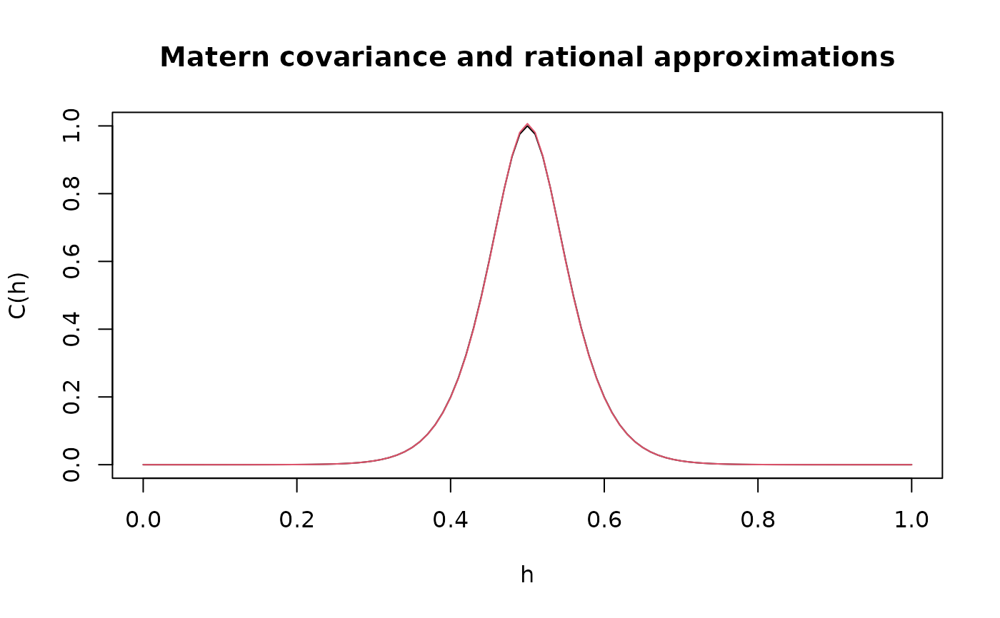

R/inla_rspde.R
rspde.matern.precision.Rdrspde.matern.precision is used for computing the
precision matrix of the
covariance-based rational SPDE approximation of a stationary Gaussian random
fields on \(R^d\) with a Matern covariance function
$$C(h) = \frac{\sigma^2}{2^(\nu-1)\Gamma(\nu)}(\kappa h)^\nu K_\nu(\kappa h)$$
rspde.matern.precision(kappa, nu, tau, rspde_order, dim, fem_mesh_matrices)
| kappa | Range parameter of the covariance function. |
|---|---|
| nu | Shape parameter of the covariance function. |
| tau | Scale parameter of the covariance function. |
| rspde_order | The order of the rational approximation |
| dim | The dimension of the domain |
| fem_mesh_matrices | A list containing the FEM-related matrices. The list should contain elements c0, g1, g2, g3, etc. |
The precision matrix
set.seed(123) nobs = 101 x <- seq(from = 0, to = 1, length.out = nobs) fem <- rSPDE.fem1d(x) kappa <- 40 sigma <- 1 d <- 1 nu = 2.6 tau = sqrt(gamma(nu) / (kappa^(2*nu) * (4*pi)^(d /2) * gamma(nu + d/2))) op_cov <- CBrSPDE.matern.operators(C=fem$C, G=fem$G,nu = nu,kappa = kappa,tau = tau, d=1,m = 2) v <- t(rSPDE.A1d(x,0.5)) c.true <- matern.covariance(abs(x - 0.5), kappa, nu, sigma) Q <- rspde.matern.precision(kappa=kappa,nu=nu,tau=tau,rspde_order=2,d=1, fem_mesh_matrices = op_cov$fem_mesh_matrices) A <- Diagonal(nobs) Abar <- cbind(A,A,A) w <- rbind(v,v,v) c.approx_cov <- (Abar)%*%solve(Q,w) #plot the result and compare with the true Matern covariance plot(x, matern.covariance(abs(x - 0.5), kappa, nu, sigma), type = "l", ylab = "C(h)", xlab="h", main = "Matern covariance and rational approximations") lines(x, c.approx_cov, col = 2) 